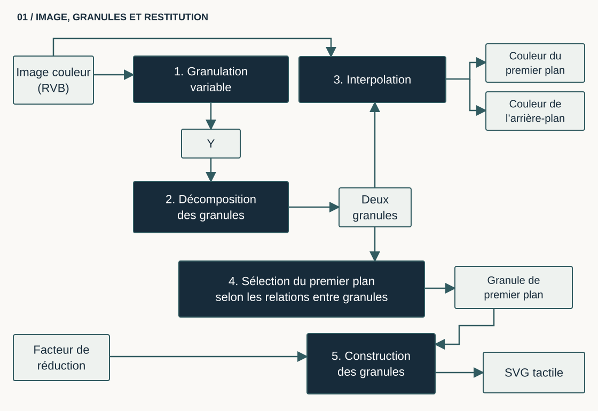
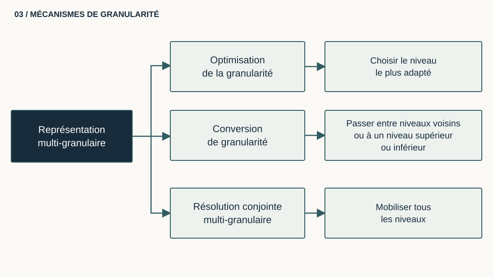
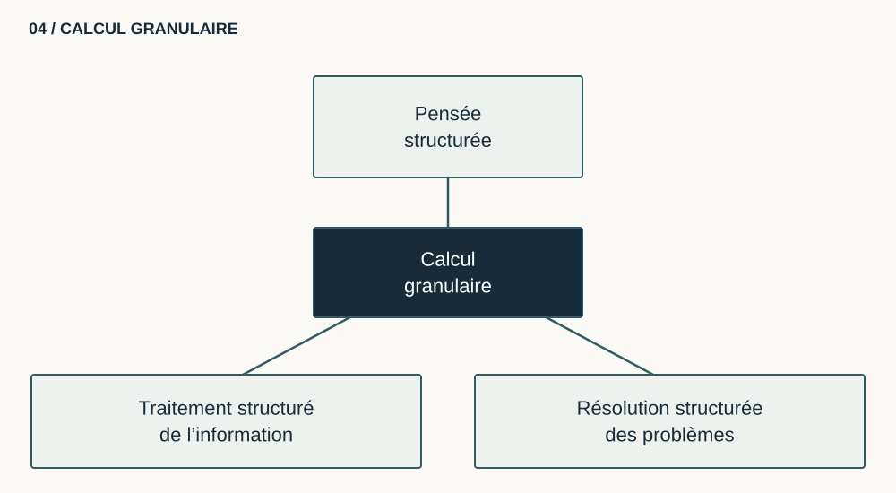
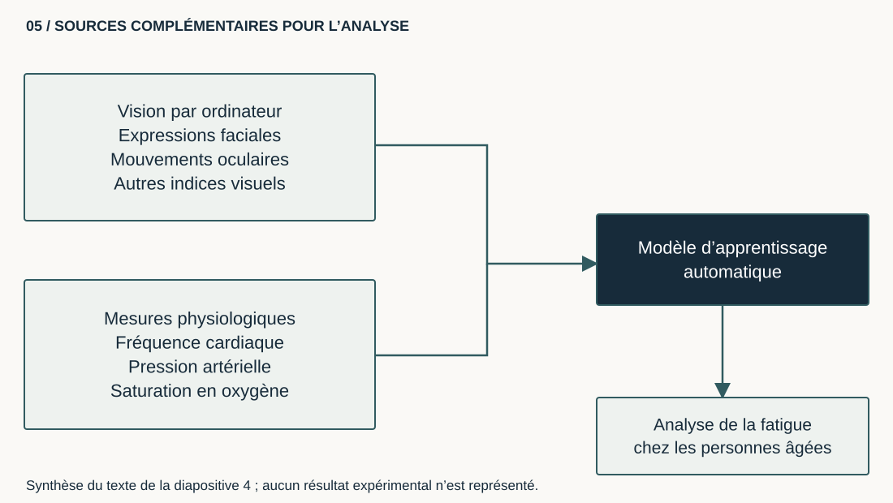

{kind=link}
{kind=link}
{kind=link}
Indices visuels
- expressions faciales
- mouvements oculaires
- indices comportementaux associés à la fatigue
Travaux scientifiques
Mes travaux portent sur l’accessibilité des images, la détection multimodale de la fatigue et les interfaces cerveau-machine. Les deux premiers axes sont illustrés ci-dessous par des schémas décrivant les méthodes utilisées.
Axe 1
Une approche multi-granulaire transforme les contenus visuels en plusieurs niveaux d’information, exploitables visuellement, interactivement ou tactilement.
Objectif : proposer des représentations adaptables aux utilisateurs, à leurs usages et à leurs contextes d’interaction, notamment dans le domaine de la déficience visuelle.




Axe 2
Les méthodes combinent vision par ordinateur, apprentissage automatique et mesures physiologiques pour extraire des indicateurs complémentaires.

Travail associé : Parallel Statistical and Machine Learning Methods for Estimation of Physical Load (2018).
Axe 3
Les techniques d’augmentation de données naturelles et synthétiques visent à renforcer la robustesse des modèles de deep learning lorsque les jeux de données sont limités.
Travail associé : Effect of Natural and Synthetic Noise Data Augmentation on Physical Action Classification by Brain–Computer Interface and Deep Learning (2025).
Doctorat et coopération scientifique
Encadrements autour de l’accessibilité tactile et de la prédiction de l’état de santé par apprentissage automatique.
Co-encadrement à 50 % en co-direction internationale sur l’adaptation de documents numériques en éléments tactiles pour des personnes à besoins spécifiques.
Co-encadrement à 25 % d’une cotutelle internationale sur le suivi et la prédiction de l’état de santé par apprentissage automatique.
{kind=link}